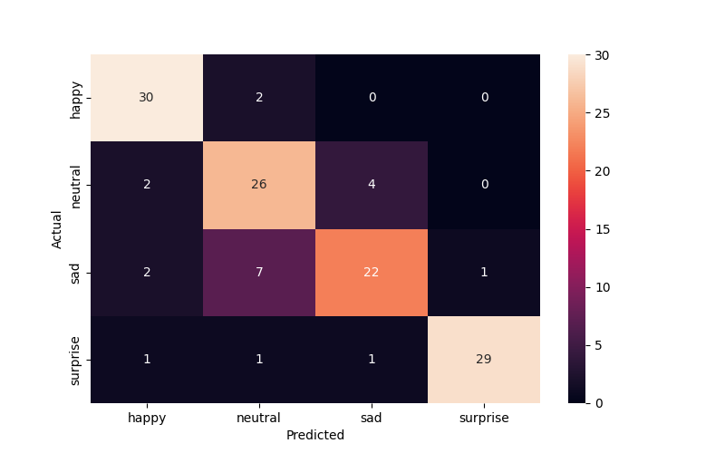
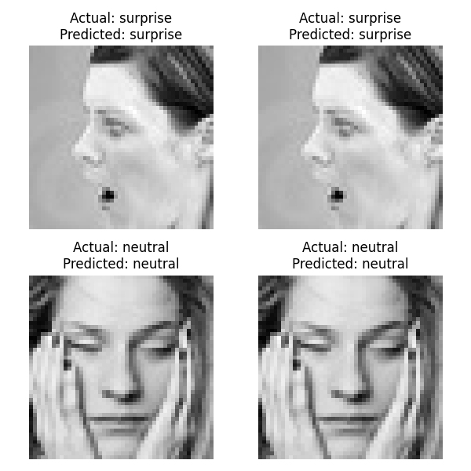

        <html>
        <head><title>Model Summary - 2024-04-10 14:12:59</title></head>
        <body>
        <h1>Model Configuration</h1>
        <pre>model:
  compile:
    learning_rate: 0.01
    optimizer: SGD
    optimizer_name: adam
  data:
    color_layers: 1
    color_mode: grayscale
    img_height: 48
    img_width: 48
    use_data_loaders: true
  layers:
  - filters: 64
    kernel_size:
    - 2
    - 2
    padding: same
    type: Conv2D
  - type: BatchNormalization
  - alpha: 0.1
    type: LeakyReLU
  - pool_size:
    - 2
    - 2
    type: MaxPooling2D
  - filters: 128
    kernel_size:
    - 2
    - 2
    padding: same
    type: Conv2D
  - type: BatchNormalization
  - alpha: 0.1
    type: LeakyReLU
  - pool_size:
    - 2
    - 2
    type: MaxPooling2D
  - filters: 256
    kernel_size:
    - 2
    - 2
    padding: same
    type: Conv2D
  - type: BatchNormalization
  - alpha: 0.1
    type: LeakyReLU
  - pool_size:
    - 2
    - 2
    type: MaxPooling2D
  - filters: 512
    kernel_size:
    - 2
    - 2
    padding: same
    type: Conv2D
  - type: BatchNormalization
  - alpha: 0.1
    type: LeakyReLU
  - pool_size:
    - 2
    - 2
    type: MaxPooling2D
  - filters: 128
    kernel_size:
    - 2
    - 2
    padding: same
    type: Conv2D
  - type: BatchNormalization
  - alpha: 0.1
    type: LeakyReLU
  - pool_size:
    - 2
    - 2
    type: MaxPooling2D
  - type: Flatten
  - activation: relu
    type: Dense
    units: 512
  - activation: relu
    type: Dense
    units: 128
  - type: Dense
    units: 64
  - type: BatchNormalization
  - type: ReLU
  - activation: softmax
    type: Dense
    units: 4
  train:
    batch_size: 32
    epochs: 40
    patience: 7
</pre>
        <h1>Model Summary</h1>
        <pre>Model: "sequential"
┏━━━━━━━━━━━━━━━━━━━━━━━━━━━━━━━━━━━━━━┳━━━━━━━━━━━━━━━━━━━━━━━━━━━━━┳━━━━━━━━━━━━━━━━━┓
┃ Layer (type)                         ┃ Output Shape                ┃         Param # ┃
┡━━━━━━━━━━━━━━━━━━━━━━━━━━━━━━━━━━━━━━╇━━━━━━━━━━━━━━━━━━━━━━━━━━━━━╇━━━━━━━━━━━━━━━━━┩
│ conv2d (Conv2D)                      │ (None, 48, 48, 64)          │             320 │
├──────────────────────────────────────┼─────────────────────────────┼─────────────────┤
│ batch_normalization                  │ (None, 48, 48, 64)          │             256 │
│ (BatchNormalization)                 │                             │                 │
├──────────────────────────────────────┼─────────────────────────────┼─────────────────┤
│ leaky_re_lu (LeakyReLU)              │ (None, 48, 48, 64)          │               0 │
├──────────────────────────────────────┼─────────────────────────────┼─────────────────┤
│ max_pooling2d (MaxPooling2D)         │ (None, 24, 24, 64)          │               0 │
├──────────────────────────────────────┼─────────────────────────────┼─────────────────┤
│ conv2d_1 (Conv2D)                    │ (None, 24, 24, 128)         │          32,896 │
├──────────────────────────────────────┼─────────────────────────────┼─────────────────┤
│ batch_normalization_1                │ (None, 24, 24, 128)         │             512 │
│ (BatchNormalization)                 │                             │                 │
├──────────────────────────────────────┼─────────────────────────────┼─────────────────┤
│ leaky_re_lu_1 (LeakyReLU)            │ (None, 24, 24, 128)         │               0 │
├──────────────────────────────────────┼─────────────────────────────┼─────────────────┤
│ max_pooling2d_1 (MaxPooling2D)       │ (None, 12, 12, 128)         │               0 │
├──────────────────────────────────────┼─────────────────────────────┼─────────────────┤
│ conv2d_2 (Conv2D)                    │ (None, 12, 12, 256)         │         131,328 │
├──────────────────────────────────────┼─────────────────────────────┼─────────────────┤
│ batch_normalization_2                │ (None, 12, 12, 256)         │           1,024 │
│ (BatchNormalization)                 │                             │                 │
├──────────────────────────────────────┼─────────────────────────────┼─────────────────┤
│ leaky_re_lu_2 (LeakyReLU)            │ (None, 12, 12, 256)         │               0 │
├──────────────────────────────────────┼─────────────────────────────┼─────────────────┤
│ max_pooling2d_2 (MaxPooling2D)       │ (None, 6, 6, 256)           │               0 │
├──────────────────────────────────────┼─────────────────────────────┼─────────────────┤
│ conv2d_3 (Conv2D)                    │ (None, 6, 6, 512)           │         524,800 │
├──────────────────────────────────────┼─────────────────────────────┼─────────────────┤
│ batch_normalization_3                │ (None, 6, 6, 512)           │           2,048 │
│ (BatchNormalization)                 │                             │                 │
├──────────────────────────────────────┼─────────────────────────────┼─────────────────┤
│ leaky_re_lu_3 (LeakyReLU)            │ (None, 6, 6, 512)           │               0 │
├──────────────────────────────────────┼─────────────────────────────┼─────────────────┤
│ max_pooling2d_3 (MaxPooling2D)       │ (None, 3, 3, 512)           │               0 │
├──────────────────────────────────────┼─────────────────────────────┼─────────────────┤
│ conv2d_4 (Conv2D)                    │ (None, 3, 3, 128)           │         262,272 │
├──────────────────────────────────────┼─────────────────────────────┼─────────────────┤
│ batch_normalization_4                │ (None, 3, 3, 128)           │             512 │
│ (BatchNormalization)                 │                             │                 │
├──────────────────────────────────────┼─────────────────────────────┼─────────────────┤
│ leaky_re_lu_4 (LeakyReLU)            │ (None, 3, 3, 128)           │               0 │
├──────────────────────────────────────┼─────────────────────────────┼─────────────────┤
│ max_pooling2d_4 (MaxPooling2D)       │ (None, 1, 1, 128)           │               0 │
├──────────────────────────────────────┼─────────────────────────────┼─────────────────┤
│ flatten (Flatten)                    │ (None, 128)                 │               0 │
├──────────────────────────────────────┼─────────────────────────────┼─────────────────┤
│ dense (Dense)                        │ (None, 512)                 │          66,048 │
├──────────────────────────────────────┼─────────────────────────────┼─────────────────┤
│ dense_1 (Dense)                      │ (None, 128)                 │          65,664 │
├──────────────────────────────────────┼─────────────────────────────┼─────────────────┤
│ dense_2 (Dense)                      │ (None, 64)                  │           8,256 │
├──────────────────────────────────────┼─────────────────────────────┼─────────────────┤
│ batch_normalization_5                │ (None, 64)                  │             256 │
│ (BatchNormalization)                 │                             │                 │
├──────────────────────────────────────┼─────────────────────────────┼─────────────────┤
│ re_lu (ReLU)                         │ (None, 64)                  │               0 │
├──────────────────────────────────────┼─────────────────────────────┼─────────────────┤
│ dense_3 (Dense)                      │ (None, 4)                   │             260 │
└──────────────────────────────────────┴─────────────────────────────┴─────────────────┘
 Total params: 1,096,452 (4.18 MB)
 Trainable params: 1,094,148 (4.17 MB)
 Non-trainable params: 2,304 (9.00 KB)
</pre>
        <h2>Test Accuracy</h2>
        <p>
1/4 ━━━━━━━━━━━━━━━━━━━━ 0s 16ms/step - accuracy: 0.9375 - loss: 0.1744
4/4 ━━━━━━━━━━━━━━━━━━━━ 0s 4ms/step - accuracy: 0.8594 - loss: 0.3915 

1/4 ━━━━━━━━━━━━━━━━━━━━ 1s 436ms/step
4/4 ━━━━━━━━━━━━━━━━━━━━ 0s 4ms/step  
</p>
        <h2>Accuracy Plot</h2>
        
        <h2>Classification Report</h2>
        <pre>              precision    recall  f1-score   support

       happy       0.86      0.94      0.90        32
     neutral       0.72      0.81      0.76        32
         sad       0.81      0.69      0.75        32
    surprise       0.97      0.91      0.94        32

    accuracy                           0.84       128
   macro avg       0.84      0.84      0.84       128
weighted avg       0.84      0.84      0.84       128

</pre>
        <h2>History</h2>
        <pre>Epoch 1: accuracy: 0.3013, loss: 1.3825, val_accuracy: 0.3478, val_loss: 1.2935, learning_rate: 0.0100
Epoch 2: accuracy: 0.4020, loss: 1.2283, val_accuracy: 0.4750, val_loss: 1.1670, learning_rate: 0.0100
Epoch 3: accuracy: 0.5070, loss: 1.0796, val_accuracy: 0.5377, val_loss: 1.0602, learning_rate: 0.0100
Epoch 4: accuracy: 0.5809, loss: 0.9693, val_accuracy: 0.4933, val_loss: 1.2764, learning_rate: 0.0100
Epoch 5: accuracy: 0.6207, loss: 0.9024, val_accuracy: 0.6062, val_loss: 0.9622, learning_rate: 0.0100
Epoch 6: accuracy: 0.6399, loss: 0.8580, val_accuracy: 0.6715, val_loss: 0.7896, learning_rate: 0.0100
Epoch 7: accuracy: 0.6434, loss: 0.8412, val_accuracy: 0.6671, val_loss: 0.8056, learning_rate: 0.0100
Epoch 8: accuracy: 0.6649, loss: 0.8146, val_accuracy: 0.6048, val_loss: 0.9628, learning_rate: 0.0100
Epoch 9: accuracy: 0.6687, loss: 0.8013, val_accuracy: 0.7000, val_loss: 0.7397, learning_rate: 0.0100
Epoch 10: accuracy: 0.6797, loss: 0.7814, val_accuracy: 0.7012, val_loss: 0.7505, learning_rate: 0.0100
Epoch 11: accuracy: 0.6787, loss: 0.7751, val_accuracy: 0.6464, val_loss: 0.8590, learning_rate: 0.0100
Epoch 12: accuracy: 0.6822, loss: 0.7746, val_accuracy: 0.6966, val_loss: 0.7864, learning_rate: 0.0100
Epoch 13: accuracy: 0.6948, loss: 0.7473, val_accuracy: 0.5869, val_loss: 0.9775, learning_rate: 0.0100
Epoch 14: accuracy: 0.6931, loss: 0.7528, val_accuracy: 0.7257, val_loss: 0.6941, learning_rate: 0.0100
Epoch 15: accuracy: 0.7046, loss: 0.7187, val_accuracy: 0.6685, val_loss: 0.8173, learning_rate: 0.0100
Epoch 16: accuracy: 0.6946, loss: 0.7389, val_accuracy: 0.6407, val_loss: 0.8904, learning_rate: 0.0100
Epoch 17: accuracy: 0.7037, loss: 0.7243, val_accuracy: 0.6998, val_loss: 0.7504, learning_rate: 0.0100
Epoch 18: accuracy: 0.7086, loss: 0.7072, val_accuracy: 0.7310, val_loss: 0.6896, learning_rate: 0.0100
Epoch 19: accuracy: 0.7123, loss: 0.7053, val_accuracy: 0.6757, val_loss: 0.8371, learning_rate: 0.0100
Epoch 20: accuracy: 0.7156, loss: 0.6950, val_accuracy: 0.7412, val_loss: 0.6394, learning_rate: 0.0100
Epoch 21: accuracy: 0.7222, loss: 0.6885, val_accuracy: 0.7324, val_loss: 0.6686, learning_rate: 0.0100
Epoch 22: accuracy: 0.7243, loss: 0.6784, val_accuracy: 0.7402, val_loss: 0.6459, learning_rate: 0.0100
Epoch 23: accuracy: 0.7241, loss: 0.6824, val_accuracy: 0.7097, val_loss: 0.7707, learning_rate: 0.0100
Epoch 24: accuracy: 0.7259, loss: 0.6698, val_accuracy: 0.7527, val_loss: 0.6152, learning_rate: 0.0100
Epoch 25: accuracy: 0.7296, loss: 0.6698, val_accuracy: 0.7137, val_loss: 0.6915, learning_rate: 0.0100
Epoch 26: accuracy: 0.7337, loss: 0.6645, val_accuracy: 0.7292, val_loss: 0.6709, learning_rate: 0.0100
Epoch 27: accuracy: 0.7345, loss: 0.6569, val_accuracy: 0.7346, val_loss: 0.6543, learning_rate: 0.0100
Epoch 28: accuracy: 0.7369, loss: 0.6505, val_accuracy: 0.7318, val_loss: 0.6667, learning_rate: 0.0100
Epoch 29: accuracy: 0.7409, loss: 0.6459, val_accuracy: 0.6876, val_loss: 0.7430, learning_rate: 0.0100
Epoch 30: accuracy: 0.7530, loss: 0.6070, val_accuracy: 0.7730, val_loss: 0.5757, learning_rate: 0.0020
Epoch 31: accuracy: 0.7625, loss: 0.5846, val_accuracy: 0.7679, val_loss: 0.5781, learning_rate: 0.0020
Epoch 32: accuracy: 0.7668, loss: 0.5833, val_accuracy: 0.7701, val_loss: 0.5787, learning_rate: 0.0020
Epoch 33: accuracy: 0.7688, loss: 0.5716, val_accuracy: 0.7770, val_loss: 0.5675, learning_rate: 0.0020
Epoch 34: accuracy: 0.7762, loss: 0.5654, val_accuracy: 0.7444, val_loss: 0.6411, learning_rate: 0.0020
Epoch 35: accuracy: 0.7754, loss: 0.5665, val_accuracy: 0.7621, val_loss: 0.5943, learning_rate: 0.0020
Epoch 36: accuracy: 0.7724, loss: 0.5601, val_accuracy: 0.7728, val_loss: 0.5953, learning_rate: 0.0020
Epoch 37: accuracy: 0.7787, loss: 0.5512, val_accuracy: 0.7826, val_loss: 0.5619, learning_rate: 0.0020
Epoch 38: accuracy: 0.7785, loss: 0.5560, val_accuracy: 0.7838, val_loss: 0.5543, learning_rate: 0.0020
Epoch 39: accuracy: 0.7790, loss: 0.5457, val_accuracy: 0.7732, val_loss: 0.5706, learning_rate: 0.0020
Epoch 40: accuracy: 0.7758, loss: 0.5518, val_accuracy: 0.7880, val_loss: 0.5516, learning_rate: 0.0020
</pre>
        <h2>Confusion Matrix</h2>
        
        <h2>Predicted Images</h2>
        
        </body>
        </html>
        